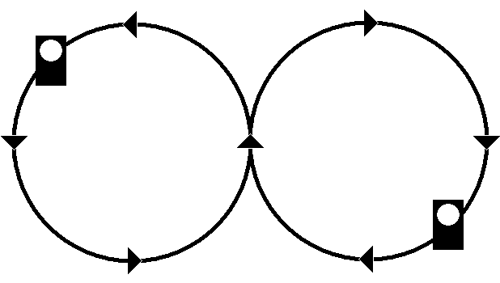

Signalbuch-Online
Signal Zp 8
Bremsprobe- und Abfertigungssignale im Bahnbetrieb.
(1) Bedeutung
Bremse in Ordnung.
(2) Handsignal, Tageszeichen
Beide Arme werden gestreckt senkrecht hochgehalten.
Handsignal, Nachtzeichen
Die weißleuchtende Handlaterne wird mehrmals in Form einer liegenden Acht bewegt.

Lichtsignal
Drei weiße Lichter senkrecht übereinander.
(3) Bestätigung
Die Aufnahme des Handsignals ist zu bestätigen.